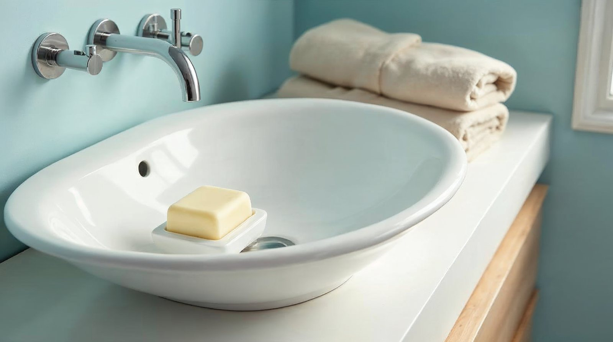
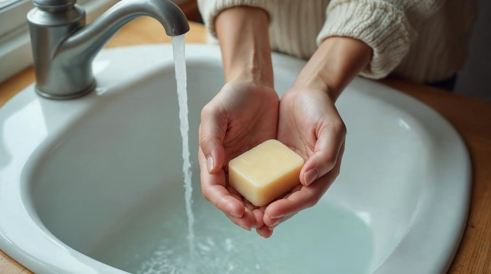
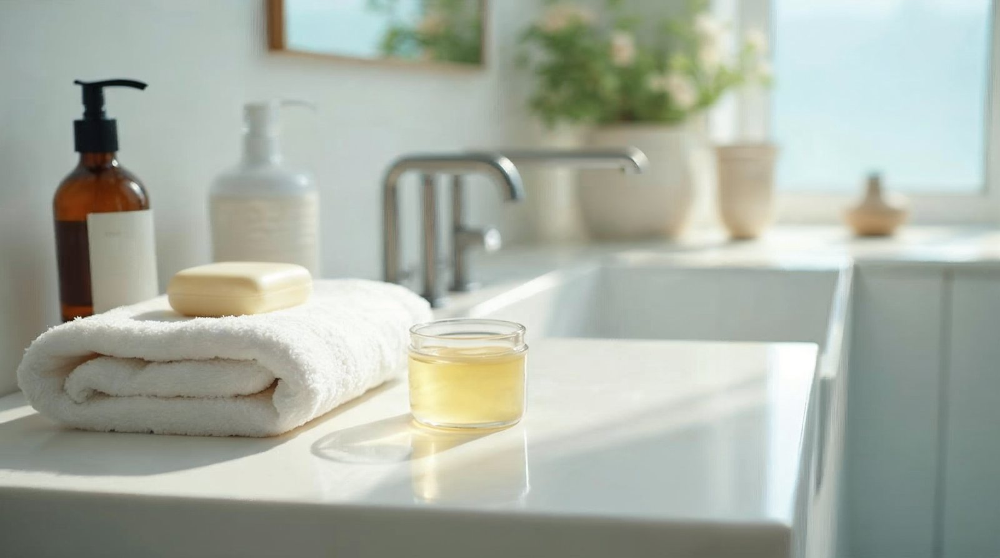
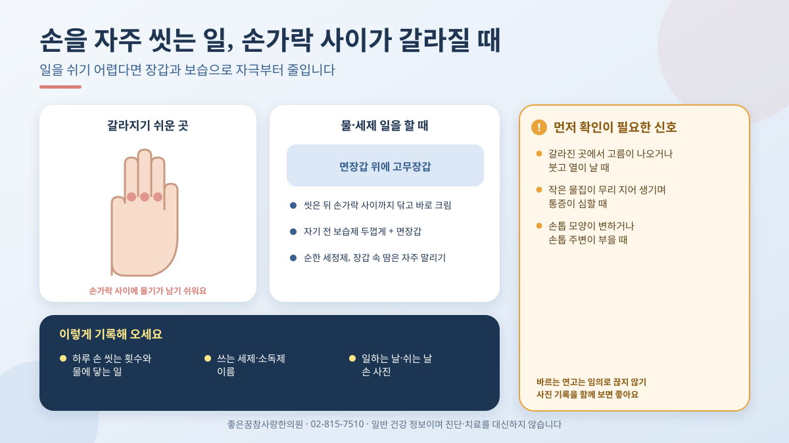

이종호 한의사 감수좋은꿈참사랑한의원 대표원장 (한의사 면허번호 19769)발행 2026-11-23 · 수정 2026-11-26
이 글의 차례
- 왜 이런 불편이 생길 수 있나요
- 비슷해 보이는 손 증상과는 어떻게 구분하나요?
- 먼저 이렇게 여쭙니다
- 일상에서 먼저 해 볼 수 있는 것
- 일하는 하루를 이렇게 나눠 보세요
- 장갑은 어떻게 고르고 쓰면 좋을까요?
- 상황별 예시
- 스스로 점검해 보세요
- 한의학에서는 손 습진을 어떻게 바라보나요?
- 자주 하는 오해는 무엇인가요?
- 일을 마친 저녁에는 손을 어떻게 돌볼까요?
- 손끝과 손톱 주변은 어떻게 돌볼까요?
- 한의원에서 함께 살필 수 있는 경우
- 첫 진료는 어떤 순서로 진행되나요?
- 다시 오셨을 때는 무엇을 비교하나요?
- 얼마나 지켜보고 언제 상담할까요
- 이렇게 기록해 오시면 상담이 쉬워집니다
- 이런 증상은 먼저 확인이 필요합니다
- 함께 읽으면 좋은 글
손가락 사이가 갈라지고 따가운 손 습진은 물과 세제, 소독제에 반복해서 닿아 피부 장벽이 약해진 경우가 많아, 일을 쉬지 못하더라도 장갑과 보습으로 자극을 줄이는 것부터 시작합니다.
음식점, 미용실, 카페, 육아처럼 하루에도 수십 번 손을 씻는 일을 하시는 분들, 노량진 학원가와 시장 주변에서 일하시는 분들께서 겨울이면 손이 먼저 탈이 난다고 하십니다.
왜 이런 불편이 생길 수 있나요
- 물에 젖었다가 마르기를 반복하면 피부 표면의 기름막이 계속 벗겨집니다.
- 세제와 소독제는 때뿐 아니라 피부를 지키는 성분까지 함께 씻어 냅니다.
- 손가락 사이는 물기가 남기 쉬워 갈라짐과 짓무름이 먼저 생기기도 합니다.
- 찬 바람과 실내 난방이 겹치는 겨울에는 같은 일을 해도 더 쉽게 갈라집니다.
- 일이 바쁜 날일수록 손을 씻은 뒤 물기를 덜 닦고 보습을 건너뛰기 쉬워 자극이 쌓입니다.
- 한의학에서는 손발이 차고 땀이 많은 편인지, 피로와 잠 부족이 겹쳐 있는지도 피부의 회복력과 함께 살핍니다.
피부 겉은 벽돌과 시멘트처럼 각질과 기름 성분이 촘촘히 쌓여 수분을 지킵니다. 물과 세제가 하루에도 수십 번 닿으면 이 시멘트가 조금씩 녹아 틈이 생기고, 그 틈으로 자극이 들어와 따가움이 생깁니다.
한번 갈라진 피부는 다시 물에 닿을 때마다 더 쓰라리고, 일을 쉬지 못하면 아물 틈이 없습니다. 그래서 손 습진은 짧은 기간보다 몇 주에서 몇 달에 걸쳐 오르내리는 경우가 많습니다.
비슷해 보이는 손 증상과는 어떻게 구분하나요?
손이 갈라지고 따갑다고 모두 같은 원인은 아닙니다. 생긴 모양과 시기를 보면 살필 방향이 달라집니다.
- 물과 세제에 닿는 시간이 길수록 심해지고 쉬는 날 편해진다면, 반복 자극에서 오는 손 습진인 경우가 많습니다.
- 특정 장갑이나 약제를 쓴 뒤 하루 이틀 지나 닿은 자리가 붉게 붓고 가렵다면, 그 물질에 대한 반응일 수 있어 피부과 확인을 권합니다.
- 손가락 옆에 작은 물집이 무리 지어 올라오고 몹시 가렵다면, 한포진처럼 다른 모양의 습진일 수 있습니다.
- 한쪽 손에만 각질이 생기고 발에도 무좀이 있다면 곰팡이균 때문일 수 있어 피부과 검사가 도움이 됩니다.
- 경계가 뚜렷하고 두꺼운 은백색 각질이 쌓인다면 건선과 구분이 필요합니다.
먼저 이렇게 여쭙니다
- 하루에 손을 몇 번 정도 씻거나 물에 담그시나요?
- 세제나 소독제를 맨손으로 만지시나요?
- 갈라진 곳이 손가락 사이인가요, 손등인가요, 손끝인가요?
- 쉬는 날에는 증상이 조금 나아지나요?
- 장갑은 어떤 것을, 얼마나 오래 끼시나요?
- 명절 전이나 연말처럼 일이 몰리는 시기에 더 심해지나요?
- 잠은 하루 몇 시간 정도 주무시나요?

일상에서 먼저 해 볼 수 있는 것
- 설거지·청소할 때 면장갑 위에 고무장갑 끼기
- 손을 씻은 뒤 손가락 사이까지 물기를 완전히 닦고 바로 핸드크림 바르기
- 일터 세면대 옆에 작은 핸드크림을 두고 씻을 때마다 덧바르기
- 장갑 안이 젖으면 바로 바꿔 낄 여분 장갑 준비하기
- 일할 때는 반지를 빼 두기(반지 밑에 물과 세제가 남기 쉽습니다)
- 잠들기 전 보습제를 두껍게 바르고 면장갑 끼고 자기
- 향이 강한 손 세정제 대신 순한 제품 쓰기
일하는 하루를 이렇게 나눠 보세요
일을 쉬기 어렵다면 하루를 몇 토막으로 나눠 토막마다 할 일을 하나씩 정해 두면 지키기 쉽습니다.
- 출근 전: 손을 씻은 뒤 보습제를 넉넉히 바르고, 일터에 가져갈 여분 장갑과 작은 크림 챙기기
- 일하는 중: 물 일은 장갑을 끼고, 맨손으로 씻은 뒤에는 손가락 사이부터 물기 닦기
- 쉬는 시간: 장갑을 벗어 손을 말리고 크림 한 번 덧바르기
- 퇴근 뒤: 집안 설거지도 장갑을 끼고, 잠들기 전 두껍게 바른 뒤 면장갑 끼기
하루에 다 지키지 못해도 괜찮습니다. 지킨 토막에 표시만 해 두어도 어떤 날 손이 덜 따가웠는지 비교하기 쉬워집니다.
장갑은 어떻게 고르고 쓰면 좋을까요?
고무장갑만 오래 끼면 안에 땀이 차서 오히려 짓무를 수 있습니다. 얇은 면장갑을 안에 끼고 그 위에 고무장갑을 끼면 땀을 머금어 주어 한결 편합니다.
장갑 안쪽이 젖었다면 바로 바꿔 끼세요. 젖은 장갑을 계속 끼는 것은 맨손으로 물 일을 하는 것과 크게 다르지 않습니다. 고무장갑을 낀 뒤 가려움이나 붉은 기가 늘었다면 다른 소재 장갑으로 바꿔 보고 그 날짜를 적어 두세요.

상황별 예시
- 예를 들어 음식점 주방에서 하루 종일 설거지와 재료 손질을 하는 경우, 맨손으로 물을 만지는 시간이 길어 고무장갑 안에 면장갑을 겹쳐 끼고, 쉬는 시간마다 장갑을 벗어 손을 말리는 것부터 정리해 볼 수 있습니다.
- 예를 들어 어린아이를 키우며 하루에도 수십 번 손을 씻고 젖병과 기저귀를 만지는 경우, 기저귀 가방과 세면대 옆에 보습제를 하나씩 두는 방법을 함께 찾습니다. 육아로 잠이 끊기는 시기라 잠과 끼니도 함께 여쭙니다.
- 예를 들어 카페에서 일하며 뜨거운 물과 찬물, 행주를 번갈아 만지는 경우, 손이 젖은 채로 매장 냉기를 맞는 때가 많아 손을 닦을 수건을 가까이 두고 손끝과 손가락 사이부터 말리는 습관을 함께 정합니다.
- 예를 들어 미용실에서 샴푸와 약제를 자주 다루는 경우, 약제를 만질 때 장갑을 끼는지와 일을 마친 뒤 손을 씻고 보습하는 순서를 함께 살핍니다.
- 예를 들어 병원이나 요양 시설처럼 손 소독을 자주 해야 하는 곳에서 일하는 경우, 소독제를 쓴 뒤 바로 바를 수 있는 작은 보습제를 주머니에 넣어 두고, 근무가 끝나면 두껍게 한 번 더 바르는 순서를 함께 정합니다.
일터마다 지킬 수 있는 것이 다르니, 지킬 수 있는 한 가지를 먼저 정하고 그다음을 더해 가는 편이 오래갑니다.
스스로 점검해 보세요
- 하루에 손을 스무 번 넘게 씻거나 물에 담그시나요?
- 손을 씻은 뒤 손가락 사이 물기를 닦지 않고 일하러 돌아가는 때가 많나요?
- 세제나 소독제를 맨손으로 만지는 일이 있나요?
- 쉬는 날이 이틀 이어지면 손이 조금 편해지나요?
- 갈라진 곳이 따가워 잠이 깨거나 일에 집중하기 어려운가요?
- 작은 물집이 손가락 옆이나 손바닥에 반복해서 생기나요?
쉬는 날 편해진다면 일터의 자극이 큰 몫을 하고 있을 수 있어 장갑과 보습 습관부터 바꿔 보세요. 물집이 반복해서 생긴다면 생긴 날과 손 사진을 함께 적어 오시면 살피기 쉽습니다.
한의학에서는 손 습진을 어떻게 바라보나요?
한의학에서는 손과 발을 몸의 끝자리로 보고, 피가 잘 닿지 않거나 몸이 지쳐 있을 때 이 끝자리가 먼저 마르고 갈라진다고 봅니다. 그래서 같은 일을 해도 잠이 짧고 끼니가 불규칙한 시기에 손이 먼저 탈이 나는 것을 몸의 신호로 함께 살핍니다.
진료실에서는 손이 차고 저린지, 손바닥에 땀이 많은지, 쉽게 피로해지는지, 소화가 더부룩한지를 함께 여쭙니다. 겉의 자극을 줄이는 일과 함께 이런 몸의 흐름도 살피면, 일을 이어 가면서도 손을 돌볼 방법을 찾기 쉬워집니다.
자주 하는 오해는 무엇인가요?
- 손을 더 자주 씻으면 깨끗해져 덜 따가울 것이라는 생각: 씻는 횟수가 늘수록 기름막이 더 벗겨지기 쉽습니다.
- 갈라진 곳은 바람을 쐬어 말려야 아문다는 생각: 바짝 마르면 더 깊게 갈라질 수 있어, 보습으로 덮어 두는 편이 편합니다.
- 핸드크림은 끈적여서 일할 때는 못 바른다는 생각: 흡수가 빠른 제품을 일할 때 쓰고, 진한 제품은 밤에 쓰는 식으로 나눌 수 있습니다.
일을 마친 저녁에는 손을 어떻게 돌볼까요?
퇴근 뒤 집에 오면 손이 쉴 차례입니다. 미지근한 물로 손을 한 번 헹군 뒤 물기를 눌러 닦고, 갈라진 곳 위주로 보습제를 두껍게 얹어 두세요.
집안 설거지와 빨래가 기다리고 있다면 가능한 한 장갑을 끼고, 손을 쓰지 않아도 되는 일은 가족과 나눠 보는 것도 방법입니다.
손끝과 손톱 주변은 어떻게 돌볼까요?
손끝과 손톱 주변은 물이 가장 오래 머물고 가장 많이 쓰는 곳이라 갈라짐이 쉽게 생깁니다. 거스러미가 생기면 손으로 뜯지 말고 작은 손톱깎이로 짧게 잘라 주세요.
손톱 주변에도 보습제를 한 번 더 문질러 바르고, 손톱 주변을 물어뜯거나 큐티클을 깊게 밀어내는 습관은 잠시 쉬어 주세요.

한의원에서 함께 살필 수 있는 경우
- 손 습진이 오래 반복되는 경우 일하는 환경과 피부 상태를 함께 살핍니다.
- 손발이 차거나 땀이 많은 편인지 몸의 전체 리듬을 함께 여쭙니다.
- 가려움과 따가움 때문에 잠이나 일에 지장이 있는 경우 생활 전반을 함께 살핍니다.
- 피부과 진료를 받고 있으면서 피로·잠·손발 냉기 같은 몸의 흐름도 함께 살피고 싶은 경우입니다.
좋은꿈참사랑한의원에서는 갈라진 손만이 아니라 일하는 하루와 손발의 온기, 땀, 잠, 소화처럼 몸 전체의 리듬을 함께 살핀 뒤 침이나 한약 상담 등 상태에 맞는 방법을 정합니다.
바르는 연고나 먹는 약이 있다면 이름을 알려 주시고, 처방받은 연고는 처방한 의사와 상의 없이 끊지 마세요. 임신 중이라면 한약 상담 전에 먼저 말씀해 주시고 산부인과와도 상의해 주세요.
첫 진료는 어떤 순서로 진행되나요?
- 모든 분의 맥을 먼저 짚고, 하루 일과를 시간 순서대로 들으며 손이 물과 세제에 닿는 때를 여쭙습니다.
- 손등과 손바닥, 손가락 사이, 손끝과 손톱 주변을 펼쳐 갈라진 깊이와 물집·진물, 양손이 비슷한지 직접 봅니다.
- 필요하다고 판단되면 혀의 모습도 살피고, 잠과 끼니, 손발의 온기, 땀, 피로를 여쭙습니다.
- 상태에 맞는 방법을 정하고, 일터에서 지킬 장갑과 보습 순서를 함께 정합니다.
일하는 곳의 사정은 저마다 달라서, 진료실에서 정한 방법이 일터에서 맞지 않을 수 있습니다. 지키기 어려운 부분이 있으면 다음에 말씀해 주세요. 그 자리에서 다시 고릅니다.
다시 오셨을 때는 무엇을 비교하나요?
두 번째 진료부터는 다시 맥을 짚고, 일하는 날과 쉬는 날 찍어 오신 손 사진을 나란히 놓고 갈라진 곳의 깊이와 붉은 기를 함께 봅니다. 장갑과 보습을 지킨 날과 지키지 못한 날의 차이도 여쭙습니다.
일이 몰린 주에 다시 심해졌다면 그 주의 잠과 끼니도 함께 살펴, 바쁜 시기를 버틸 방법을 미리 정해 둡니다.
얼마나 지켜보고 언제 상담할까요
- 장갑과 보습 습관을 바꾼 뒤 2주 정도는 일하는 날과 쉬는 날의 손 사진을 비교하며 지켜볼 수 있습니다.
- 2주가 지나도 갈라짐이 깊어지거나 따가움 때문에 잠을 깨는 날이 이어지면 상담을 받아 보시기를 권합니다.
이렇게 기록해 오시면 상담이 쉬워집니다
- 하루 손 씻는 횟수와 물에 닿는 일의 종류
- 일터에서 쓰는 세제·소독제 이름
- 일이 몰렸던 날과 그 주의 잠 시간
- 일하는 날과 쉬는 날의 손 사진
- 쓰고 있는 연고와 핸드크림
손 사진은 손등과 손바닥, 손가락 사이를 펼쳐서 각각 한 장씩 찍어 두면 좋습니다. 일하는 날 저녁과 쉬는 날 저녁처럼 같은 때에 찍으면 차이가 더 잘 보입니다.
손을 쉬게 할 수 없는 일을 하시면서 따가움을 참아 오신 날이 많았을 것 같습니다. 다음에 오시면 손이 가장 따가웠던 날의 하루 일과부터 여쭙겠습니다.
이런 증상은 먼저 확인이 필요합니다
- 갈라진 곳이 붓고 고름이 나거나, 붉은 기운이 팔 쪽으로 번지며 열이 나는 경우
- 고무장갑을 낀 뒤 입술·혀가 붓거나 숨이 차는 경우
이런 신호가 있으면 한의원보다 가까운 병원이나 응급실을 먼저 찾으세요.
함께 읽으면 좋은 글
- 겨울마다 손가락 끝이 갈라지고 쩍 벌어져 물 닿을 때마다 쓰라릴 때는 어떻게 살피나요?
- 손발에 작은 물집이나 각질이 반복될 때는 무엇을 살피나요?
- 손톱이 잘 갈라지고 부서지는 것은 무엇을 살피나요?

여쭙는 것
- 하루에 손을 몇 번 정도 씻거나 물에 담그시나요?
- 세제나 소독제를 맨손으로 만지시나요?
- 갈라진 곳이 손가락 사이인가요, 손등인가요, 손끝인가요?
생활에서 해 볼 것
- 설거지·청소할 때 면장갑 위에 고무장갑 끼기
- 손을 씻은 뒤 손가락 사이까지 물기를 완전히 닦고 바로 핸드크림 바르기
- 일터 세면대 옆에 작은 핸드크림을 두고 씻을 때마다 덧바르기
한의원에서 함께 살필 것
- 손 습진이 오래 반복되는 경우 일하는 환경과 피부 상태를 함께 살핍니다.
- 손발이 차거나 땀이 많은 편인지 몸의 전체 리듬을 함께 여쭙니다.
- 가려움과 따가움 때문에 잠이나 일에 지장이 있는 경우 생활 전반을 함께 살핍니다.
먼저 확인이 필요한 신호
- 갈라진 곳이 붓고 고름이 나거나, 붉은 기운이 팔 쪽으로 번지며 열이 나는 경우
- 고무장갑을 낀 뒤 입술·혀가 붓거나 숨이 차는 경우
한눈에 보는 표
| 구분 | 핵심 |
|---|---|
| 여쭙는 것 | 하루에 손을 몇 번 정도 씻거나 물에 담그시나요? 세제나 소독제를 맨손으로 만지시나요? |
| 생활에서 해 볼 것 | 설거지·청소할 때 면장갑 위에 고무장갑 끼기 손을 씻은 뒤 손가락 사이까지 물기를 완전히 닦고 바로 핸드크림 바르기 |
| 한의원에서 함께 살필 것 | 손 습진이 오래 반복되는 경우 일하는 환경과 피부 상태를 함께 살핍니다. 손발이 차거나 땀이 많은 편인지 몸의 전체 리듬을 함께 여쭙니다. |
| 먼저 확인이 필요한 신호 | 갈라진 곳이 붓고 고름이 나거나, 붉은 기운이 팔 쪽으로 번지며 열이 나는 경우 고무장갑을 낀 뒤 입술·혀가 붓거나 숨이 차는 경우 |
자주 묻는 질문
일을 쉬지 못하는데 어떻게 하나요?
장갑과 보습처럼 일하면서 할 수 있는 방법부터 함께 정리합니다. 쉬는 날과 일하는 날의 차이를 기록해 오시면 도움이 됩니다.
손 소독제는 써도 되나요?
알코올 소독제는 건조함을 더할 수 있어, 쓴 뒤에는 보습제를 함께 바르는 것을 권합니다.
면장갑을 끼고 자면 도움이 되나요?
보습제를 바른 뒤 면장갑을 끼면 밤사이 덜 마르는 데 도움이 될 수 있습니다. 답답하거나 땀이 차면 벗으세요.
핸드크림은 언제 바르는 게 좋나요?
손을 씻고 물기를 닦은 직후에 바르시기를 권합니다. 일하는 중간에는 작은 용기로 자주 덧바르세요.
장갑을 끼면 땀이 차서 더 가렵지 않나요?
고무장갑만 오래 끼면 안에 땀이 차 짓무를 수 있어, 면장갑을 안에 끼고 틈틈이 벗어 말리는 방법을 권합니다. 땀이 많은 편이라면 그 경향도 함께 여쭙니다.
좋은꿈참사랑한의원은 재진 때 지난번 이야기부터 이어서 여쭙니다. 진료시간과 예약은 오시는 길에서 확인하세요.
어디서 상담받을 수 있나요?
좋은꿈참사랑한의원은 서울 동작구 만양로2길 2 신성빌딩 3층·5층(서울 동작구 상도동, 7호선 상도역 3번 출구 근처)에 있습니다. 한의사 3명(이종호 대표원장, 조영기 수석진료원장, 정원영 진료원장)이 진료합니다. 진료시간은 평일 09:30~20:00(점심 13:00~14:00), 토·일·공휴일 09:30~15:00이며, 방문 전 전화로 확인을 권합니다. 예약은 네이버 예약, 카카오톡 상담, 전화 02-815-7510로 받습니다.
이 글은 일반적인 건강 정보이며 개인의 진단이나 치료를 대신하지 않습니다. 증상이 있거나 복용 중인 약이 있다면 진료를 통해 확인하세요. 치료 효과는 개인마다 다를 수 있습니다.
작성 기준: 일반적으로 알려져 있는 건강 정보를 참고해 정리했습니다(대표원장 감수). 증상 기록은 1~2주 동안 하루 1회, 비슷한 시간에 적어 오시면 지난 상태와 비교하기 쉽습니다.